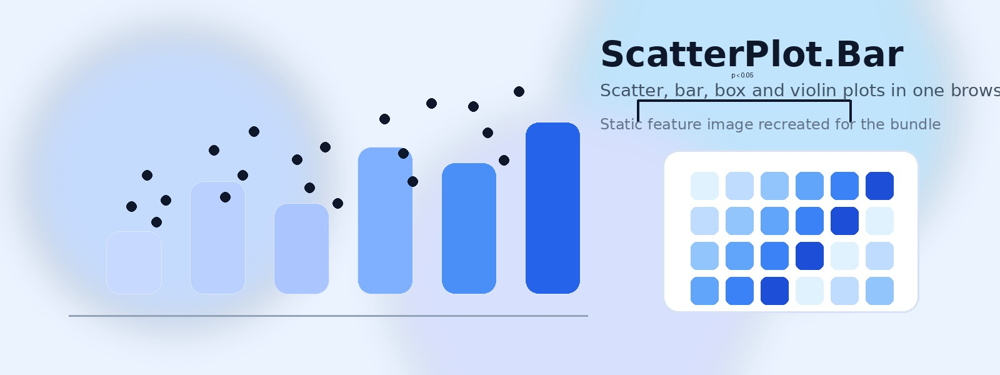

Make Scatter Plots Combined with Bars Online
Free web app alternative to Excel and GraphPad Prism to make dot plots combined with bar plots.
Display significance levels with brackets just as in GraphPad Prism on scatter plots combined with columns or barplots.
The scientific data presentation often requires visualisation of the individual datapoints. This web app does that. You can now easily create dot plots overlaying columns, violin, box, and bar plots online. Or just add a crossbar representing means to your scattered datapoints. That option is at the bottom of the Additional Plot Options section, but you need to build columns or violin plots first. The crossbar replaces black and white columns but overlays box and violin plots.
Data entry can be done manually in the table tab of the app, or by uploading a comma separated file from the upload tab. From that tab you can also upload a table for making grouped bar plots combined with scatter plots. If you need no individual datapoints on your graphs, you can remove them by reducing their opacity to zero.
The statistics section below the color and datapoint controls includes Mann-Whitney U test, Welch t-test, paired t-test, ANOVA followed by Tukey HSD, and Kruskal-Wallis with Dunn's tests. The plot can also display significance levels and p-values with brackets indicating compared columns.
You can generate an online line graph connecting means and combining them with error bars. The data needs to be in columns and the headers must be numeric. At present, only one graph per plot is possible.
The app is based on R, ggplot2, and Shiny and is hosted through shinyapps.io.